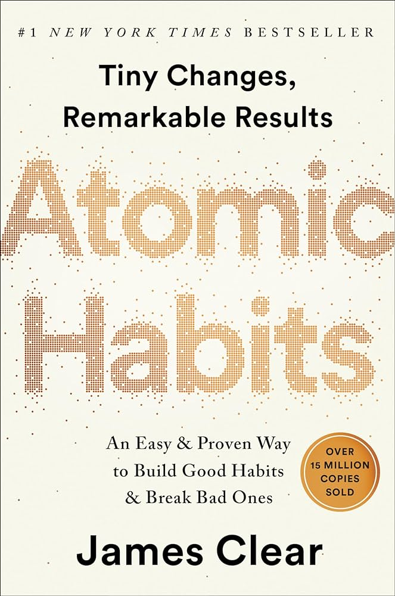

BOOK 15

"Atomic Habits" by James Clear
Published in 2018, the book explores the power of tiny changes in building good habits and breaking
bad ones. Clear delves into the science behind habits, offering practical strategies to make small
adjustments that can lead to remarkable transformations over time. The book emphasizes
the idea that success is a product of daily habits and encourages readers to focus on improving
processes rather than fixating on goals.